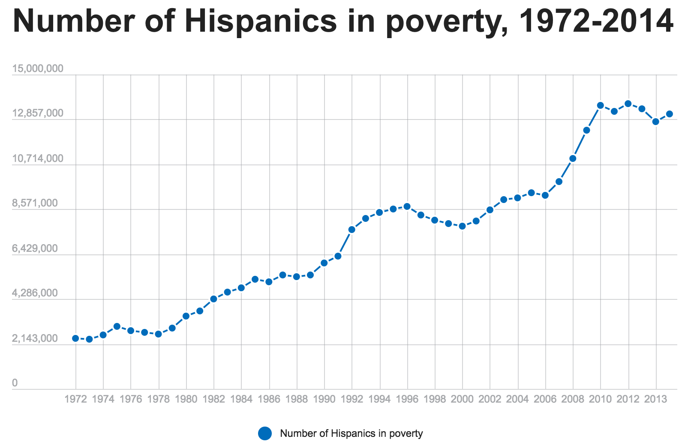
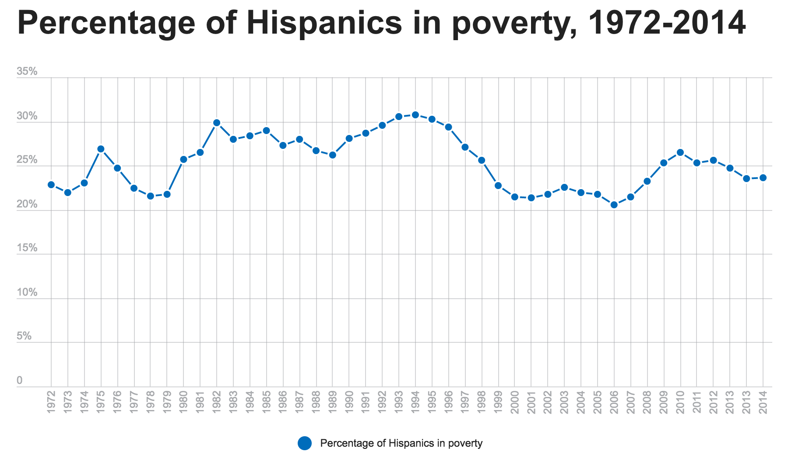

Reminder! If you are a fan of Donald Trump, please skip this article.
Donald Trump offers misleading statistics about Hispanic poverty
By John Poon (Homework 3)
Media has been criticizing the accuracy of Donald Trump's speech. Indeed, he did misled people not just by naming random terrorist attacks or labelling "fake news", here is one of them in August when he was at a rally in Tampa.'
“Hispanic citizens have been suffering under this president. Since President Obama came into office, another 2 million Hispanics have joined the ranks of those in poverty. … The number of Hispanic children living in poverty increased by 15 percent in that short period of time.”
To test the accuracy of Trump’s comment, we turned to data from the U.S. Census Bureau, which tracks poverty by age and race, among other characteristics. The most recent full year for which data has been published is 2014.
"

We checked a claim by Donald Trump about poverty among Hispanics that he made at a rally in Tampa.
We checked a claim by Donald Trump about poverty among Hispanics that he made at a rally in Tampa.

Overall Hispanic poverty The data shows that Trump is on target if you start the clock in 2008, the year before Obama took office. Between 2008 and 2014, the number of Hispanics in poverty rose by a little over 2.1 million. But using that time span means using the year before Obama took office -- not "since" he took office -- and it also cherry-picks the data to largely precede the severe recession that began before Obama took office. Starting the clock in 2009 produces a smaller increase (754,000). If you started the clock in 2010, Hispanic poverty decreased by 418,000.
Overall Hispanic poverty The data shows that Trump is on target if you start the clock in 2008, the year before Obama took office. Between 2008 and 2014, the number of Hispanics in poverty rose by a little over 2.1 million. But using that time span means using the year before Obama took office -- not "since" he took office -- and it also cherry-picks the data to largely precede the severe recession that began before Obama took office. Starting the clock in 2009 produces a smaller increase (754,000). If you started the clock in 2010, Hispanic poverty decreased by 418,000.

Number of Hispanics in poverty, 1972-2014 Meanwhile, Trump’s comment also uses raw numbers of people in poverty, when statisticians usually prefer poverty rates, since rates take into account changes in the overall population being studied. If you use poverty rates instead of raw numbers, then Hispanic poverty has risen slightly since 2008 (0.4 percentage points), but has fallen by 1.7 points since 2009 and by 2.9 points since 2010.
Number of Hispanics in poverty, 1972-2014 Meanwhile, Trump’s comment also uses raw numbers of people in poverty, when statisticians usually prefer poverty rates, since rates take into account changes in the overall population being studied. If you use poverty rates instead of raw numbers, then Hispanic poverty has risen slightly since 2008 (0.4 percentage points), but has fallen by 1.7 points since 2009 and by 2.9 points since 2010.
Trump said that "since President Obama came into office, another 2 million Hispanics have joined the ranks of those in poverty. … The number of Hispanic children living in poverty increased by 15 percent in that short period of time." The numbers are close to accurate only if you start counting in 2008, before Obama took office and before the full effects of a recession that Obama inherited. And overall, the comment ignores that since the recession hit, Obama has overseen a general decline in Hispanic poverty. The statement contains some element of truth but ignores critical facts that would give a different impression, so we rate it Mostly False.